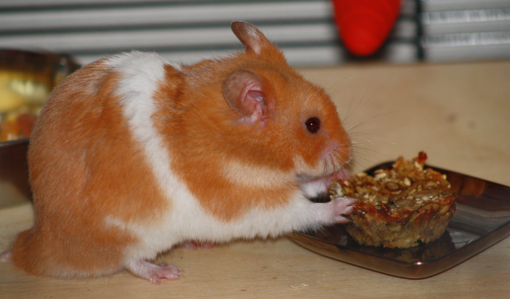

13-Apr-2017 | Milku
And there's more...
Credit where credit is due, my humans have really tried hard to make some interesting treats. Now, I'm going to tell you about two more recipes that I've sampled.
For my third type of snack, they mixed up a combination of:
Some mixing, moulding and baking resulted in the production of some tiny hamster-sized cakes. Hmmm...they weren't bad. But, they weren't the best. I'm not so fond of sugary things. The sweetest thing in my cage has to be me!
For my final taste test, I was given a sausage-shaped biscuit that was a combination of:
Fewer ingredients, no mealworms...I wasn't optimistic, but it was very tasty. I'll have some more of those. Sorry, but there are no photos of me with that snack. It disappeared into my cheek pouch too fast for my humans to get their camera focused on me.